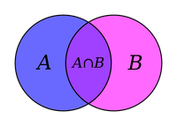
Výroky a množiny
Výrok, operace a výroky
Obměněná implikace
Obrácená implikace
Negace složených výroků
Výroky s kvantifikátory
Operace s množinami
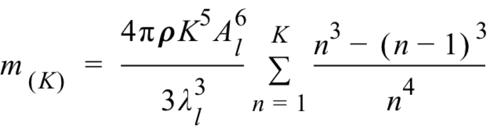
Rovnice a nerovnice
Lineární rovnice a nerovnice
Rovnice v podílovém dvaru
Kvadratické rovnice
Kvadratický trojčlen
Kvadratické nerovnice
Neznámá ve jmenovateli
Nerovnice s neznámou ve jmenovatli
Rovnice s neznámou pod odmocninou
Nerovnice s neznámou pod odmocninou
Rovnice s neznámou v absolutní hodnotě
Reciproké rovnice
Soustavy rovnic
Řešení metodou substituce
Soustavy nerovnic
Slovní úlohy
Lineární rovnice s parametrem
Rovnice s neznámou ve jmenovateli
Rovnice s neznámou pod odmocninou
Soustavy rovnic
Kvadratické rovnce s parametrem
Neznámá ve jmenovateli (po úpravě kvadratická rovnice)
Funkce
Definice funkce
Rovnost funkcí
Definiční obor funkce
Hodnota funkce, obor funkčních hodnot
Funkce složená
Vlastnosti funkcí
Vztahy mezi grafy funkcí
Lineární funkce
Kvadratická funkce
Úprava výrazu - graf funkce
Exponenciální funkce
Logaritmus čísla
Logaritmická funkce
Grafické řešení rovnic a nerovnic
Inverní funkce
Exponenciální a logaritmické rovnice
Exponenciální rovnice
Logaritmické rovnice
Exponenciální nerovnice
Logaritmické nerovnice
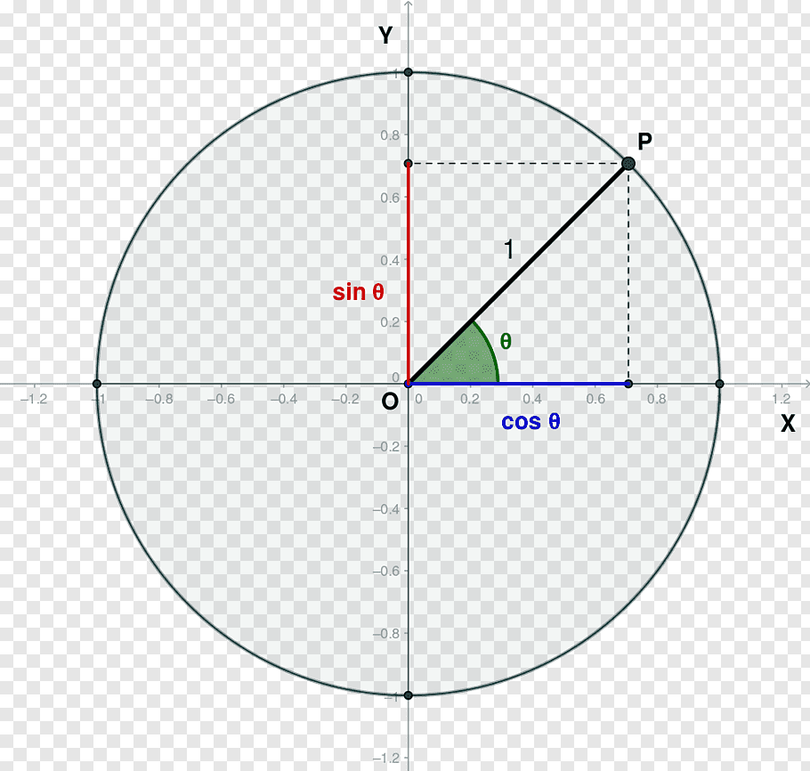
Goniometrie a trigonometrie
Velikost úhlu - míra stupnňová, míra oblouková
Orientovaný úhel
Hodnoty goniometrických funkcí
Grafy goniometrických funkcí s ablostuními hodnotami
Cyklometrické funkce
Základní vztahy mezi funkcem
Vzorce pro dvojnásobný úhel
Součtové vzorce
Vzorce pro součet a rozdíl goniometrických funkcí
Vzorce pro poloviční úhel
Grafy funkcí - užtí vzorců
Vztahy pro úhly v trojúhelníku
Sinová a kosinová věta
Vzorce pro obsah trojúhelníku
Kružnice trojúhelníku opsané a vepsané
Pravidelné mnohoúhelníky
Goniometrické rovnice
Goniometrické nerovnice
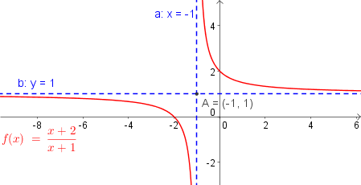
Funkce pokročilé
Grafy mocninných funkcí
Grafy lineárních lomených funkcí
Inverzní funkce a k funkcím mocninným
Inverzní funkce k funkci lineární lomené
Počítání s odmocnnami
Počítání s mocninami s celým exponentem
Počítání s mocnimam s racionálním exponentem
Úpravy výrazů obsahujících mocniny a odmocniny
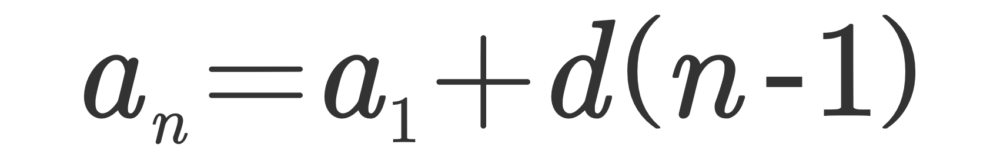
Posloupnosti a řady
Způsoby zadání posloupnosti
Vlastnosti posloupnosti
Aritmetická, geometrická posloupnost
Užití geometrické posloupnosti
Nekonečná geometrická řada
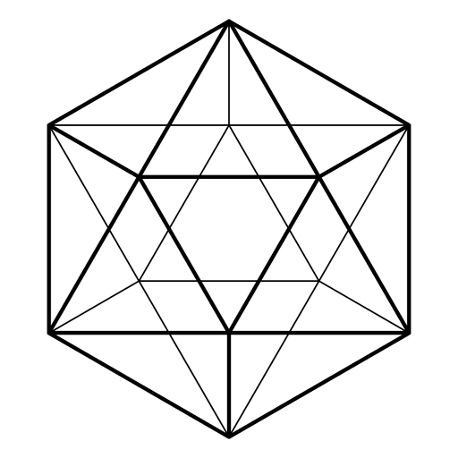
Geometrie
Základní typy bodových množin
Tečna z bodu ke kružnici
Konstrukce kružnic požadovaných vlastností
Konstrukce trojúhelníků a čtyřúhelníků
Konstrukce úseček
Shodná zobrazení
Skládání osových souměrností
Hledání mnimálního součtu úseček
Stejnolehlost
Skládání rotace a stejnolehlosti
Trojúhelníková nerovnost
Úhly střídavé, souhlasné, vedlejší, vrcholové
Úhly v trojúhelníku
Shodnost trojúhelníků
Podobnost trojúhelníků
Pythagorova věta a Euklidovy věty
Středový a obvodový úhel
Mocnost bodu ke kružnici
Aritmetický a geometrický průměr
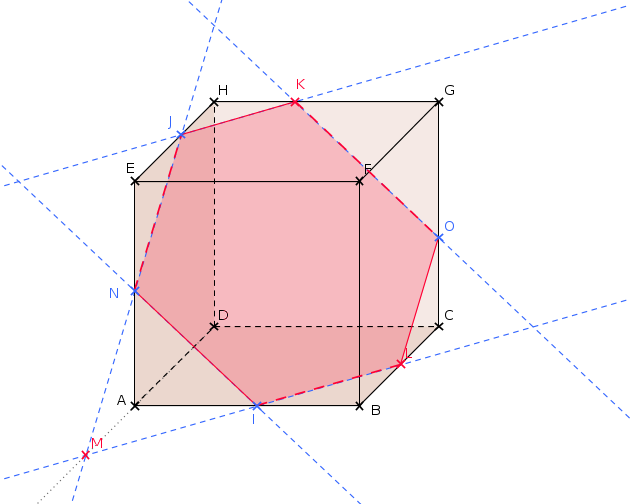
Stereometrie
Vzájemná poloha
Řezy
Průnik dvou rovin
Průnik přímky s rovinou
Průnik přímky s povrchem tělesa
Vzdálenost dvou bodů
Vzdálenost bodu od přímky
Vzdálenost rovnoběžných přímek
Vzdálenost mimoběžek
Vzdálenost bodu od roviny
Vzdálenost rovnoběžných rovin
Odchylka dvou přímek
Odchylka přímky od roviny
Odchylka dvou rovin
Další úlohy
Obsah řezu
Objemy a povrchy těles
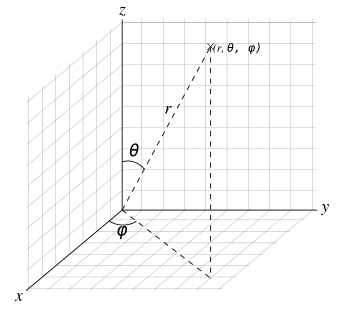
Analytická geometrie
Vektor, souřadnice vektoru
Sčítání a odčítání vektorů, násobek vektoru
Lineární kombinace vektorů
Lineární závislé a lineárně nezávislé vektory
Velikost vektoru
Skalární součin dvou vektorů u . v
Vektorový součin dvou vektorů u X v
Smíšený součin tří vektorů (u X v) . w
Rovnice přímky
Úsečka, polopřímka, polorovna
Vzájemná poloha přímek
Odchylka dvou přímek
Výpočty vzdáleností
Zobrazení v analytické geometrii
Další úlohy
Vyšetřování množin bodů dané vlastnosti
Přímka v prostoru
Vzájemná poloha přímek v prostoru
Rovina
Vzájemná poloha přímky a roviny
Vzájemná poloha dvou rovin
Vzájemná poloha tří rovin
Odchylka dvou přímek
Odchylka dvou rovin
Vzdálenost dvou bodů v prostoru
Vzdálenost bodu od přímky v prostoru
Vzdálenost bodu od roviny
Vzdálenost mimoběžek
Souměrnosti v prostoru
Další úlohy
Úlohy na tělesech
Kružnice
Elipsa
Hyperbola
Parabola
Obecná rovnice kuželosečky
Vnitřní (vnější) oblast kuželosečky
Kuželosečky a přímka
Tečna v bodě kuželosečky
Tečna z bodu ke kuželosečce
Tečna rovnoběžná s danou přímkou
Tečna kolmá k dané přímce
Tečna daným směrem
Další úlohy
Vyšetřování množin bodů dané vlastnosti
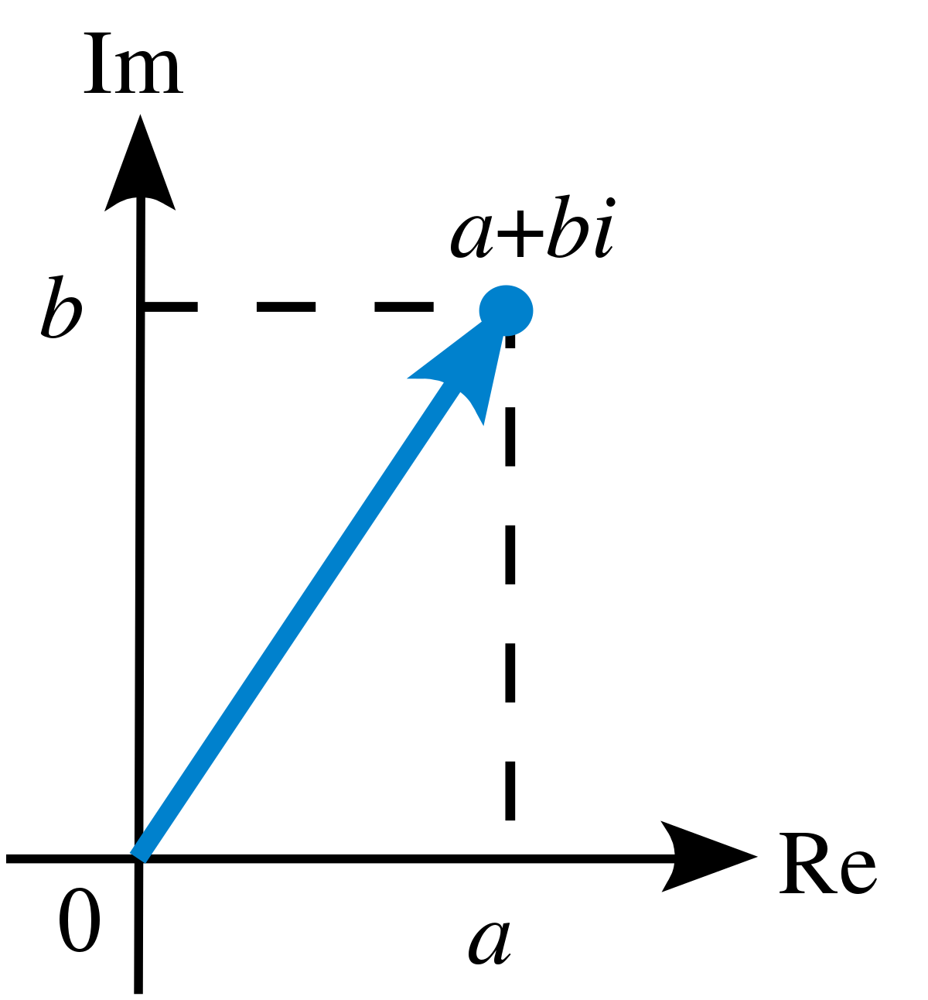
Komplexní čísla
Algebraický tvar komplexního čísla
Mocniny imaginární jednotky i
Znázornění komplexních čísel v Gaussově rovině
Čísla komplexně sdružená
Absolutní hodnota komplexního čísla
Goniometrický tvar komplexního čísla
Umocňování komplexních čísel
Odmocňování komplexních čísel
Rovnice v množině komplexních čísel
Kvadratická rovnice v množině komplexních čísel
Binomická rovnice
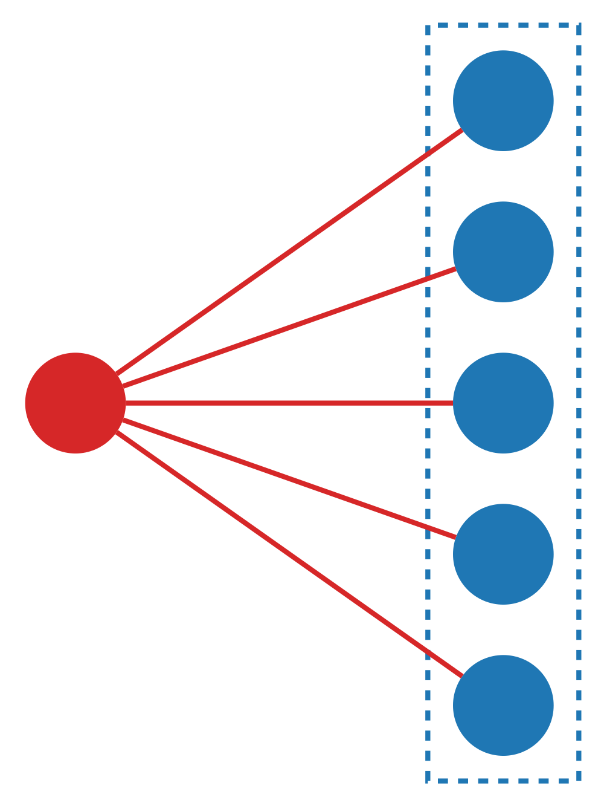
Kombinatorika
Faktoriál čísla - n!
Kombinační číslo, vlastnosti kombinačních čísel
Rovnice a nerovnice s kombinačními čísly
Pravidlo kombinatorického součinu
Variace
Permutace
Kombinace
Variace, kombinace - rovnice
Variace, permutace, kombinace s opakováním
Binomická věta
Důkaz matematickou indukcí
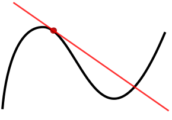
Diferenciální počet
Limita funkce ve vlastním bodě
Limita funkce v nevlastním bodě
Jednostranné limity
Definice derivace funkce
Pravidla pro výpočet derivace
Tečna ke grafu funkce
Funkce rostoucí, klesající
Druhá derivace funkce
Maximum, minimum funkce
Průběh funkce
Derivace implicitní funkce
Derivace funkce a výpočet limity
Slovní úlohy řešené pomocí derivací
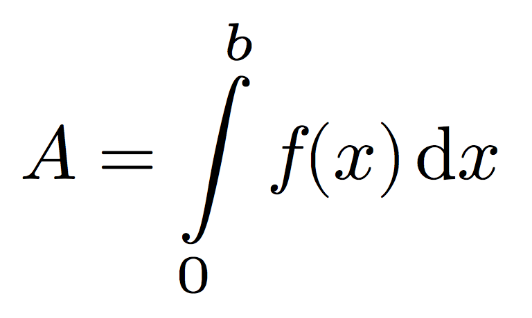
Integrální počet
Primitivní funkce
Určitý integrál
Obsah rovinného obrazce
Objem rotačního tělesa
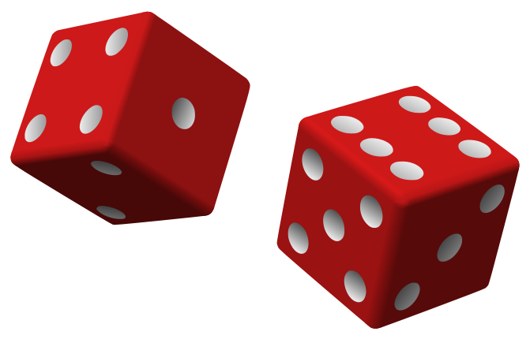
Pravděpodobnost a statistika
Definice pravděpodobnosti, vlastnosti pravděpodobnosti, binomické rozdělení
Aritmetický průměr, modus, medián, směrodatná odchylka, variační koeficient